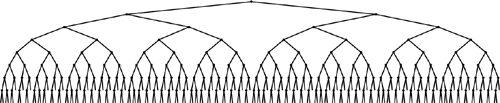

C++ Programming Robert Sedgewick - Princeton University Addison Wesley Professional Algorithms in C++, Parts 1–4: Fundamentals, Data Structure, Sorting, Searching, Third Edition C++ Programming Robert Sedgewick - Princeton University Addison Wesley Professional Algorithms in C++, Parts 1–4: Fundamentals, Data Structure, Sorting, Searching, Third Edition
Chapter Thirteen. Balanced Trees
The BST algorithms in the previous chapter work well for a wide variety of applications, but they do have the problem of bad worst-case performance. What is more, it is embarrassingly true that the bad worst case for the standard BST algorithm, like that for quicksort, is one that is likely to occur in practice if the user of the algorithm is not watching for it. Files already in order, files with large numbers of duplicate keys, files in reverse order, files with alternating large and small keys, or files with any large segment having a simple structure can all lead to quadratic BST construction times and linear search times.
In the ideal case, we could keep our trees perfectly balanced, like the tree depicted in Figure 13.1. This structure corresponds to binary search and therefore allows us to guarantee that all searches can be completed in less than lg N + 1 comparisons, but is expensive to maintain for dynamic insertions and deletions. The search performance guarantee holds for any BST for which all the external nodes are on the bottom one or at most two levels, and there are many such BSTs, so we have some flexibility in arranging for our tree to be balanced. If we are satisfied with near-optimal trees, then we can have even more flexibility. For example, there are a great many BSTs of height less than 2lg N. If we relax our standard but can guarantee that our algorithms build only such BSTs, then we can provide the protection against bad worst-case performance that we would like to have in practical applications in a dynamic data structure. As a side benefit, we get better average-case performance, as well.
The external nodes in this BST all fall on one of two levels, and the number of comparisons for any search is the same as the number of comparisons that would be used by binary search for the same key (if the items were in an ordered array). The goal of a balanced-tree algorithm is to keep a BST as close as possible to being as well balanced as this one, while still supporting efficient dynamic insertion, deletion, and other dictionary ADT operations.

One approach to producing better balance in BSTs is periodically to rebalance them explicitly. Indeed, we can balance most BSTs completely in linear time, using the recursive method shown in Program 13.1 (see Exercise 13.4). Such rebalancing is likely to improve performance for random keys, but does not provide guarantees against quadratic worst-case performance in a dynamic symbol table. On the one hand, the insertion time for a sequence of keys between rebalancing operations can grow quadratic in the length of the sequence; on the other hand, we do not want to rebalance huge trees frequently, because each rebalancing operation costs at least linear time in the size of the tree. This tradeoff makes it difficult to use global rebalancing to guarantee fast performance in dynamic BSTs. All the algorithms that we will consider, as they walk through the tree, do incremental, local operations that collectively improve the balance of the whole tree, yet they never have to walk through all the nodes in the way that Program 13.1 does.
The problem of providing guaranteed performance for symbol-table implementations based on BSTs gives us an excellent forum for examining precisely what we mean when we ask for performance guarantees. We shall see solutions to this problem that are prime examples of each of the three general approaches to providing performance guarantees in algorithm design: we can randomize, amortize, or optimize. We now consider each of these approaches briefly, in turn.
A randomized algorithm introduces random decision making into the algorithm itself, to reduce dramatically the chance of a worst-case scenario (no matter what the input). We have already seen a prime example of this arrangement, when we used a random element as the partitioning element in quicksort. In Sections 13.1 and 13.5, we shall examine randomized BSTs and skip lists—two simple ways to use randomization in symbol-table implementations to give efficient implementations of all the symbol-table ADT operations. These algorithms are simple and are broadly applicable, but went undiscovered for decades(see reference section). The analysis that proves these algorithms to be effective is not elementary, but the algorithms are simple to understand, to implement, and to put to practical use.
Program 13.1. Balancing a BST|
This recursive function puts a BST into perfect balance in linear time, using the partitioning function partR from Program 12.15. We partition to put the median node at the root, then (recursively) do the same for the subtrees.
void balanceR(link& h)
{
if ((h == 0) || (h->N == 1)) return;
partR(h, h->N/2);
balanceR(h->l);
balanceR(h->r);
}
|
An amortization approach is to do extra work at one time to avoid more work later, to be able to provide guaranteed upper bounds on the average per-operation cost (the total cost of all operations divided by the number of operations). In Section 13.2, we shall examine splay BSTs, a variant of BSTs that we can use to provide such guarantees for symbol-table implementations. The development of this method was one impetus for the development of the concept of amortization (see reference section). The algorithm is a straightforward extension of the root insertion method that we discussed in Chapter 12, but the analysis that proves the performance bounds is sophisticated.
An optimization approach is to take the trouble to provide performance guarantees for every operation. Various methods have been developed that take this approach, some dating back to the 1960s. These methods require that we maintain some structural information in the trees, and programmers typically find the algorithms cumbersome to implement. In this chapter, we shall examine two simple abstractions that not only make the implementation straightforward, but also lead to near-optimal upper bounds on the costs.
After examining implementations of symbol-table ADTs with guaranteed fast performance using each of these three approaches, we conclude the chapter with a comparison of performance characteristics. Beyond the differences suggested by the differing natures of the performance guarantees that each of the algorithms provides, the methods each carry a (relatively slight) cost in time or space to provide those guarantees; the development of a truly optimal balanced-tree ADT is still a research goal. Still, the algorithms that we consider in this chapter are all important ones that can provide fast implementations of search and insert (and several other symbol-table ADT operations) in dynamic symbol tables for a variety of applications.
Exercises |  13.1 Implement an efficient function that rebalances BSTs that do not have a count field in their nodes.
13.1 Implement an efficient function that rebalances BSTs that do not have a count field in their nodes.
| | 13.2 Modify the standard BST insertion function in Program 12.8 to use Program 13.1 to rebalance the tree each time that the number of items in the symbol table reaches a power of 2. Compare the running time of your program with that of Program 12.8 for the tasks of (i) building a tree from N random keys and (ii) searching for N random keys in the resulting tree, for N = 103, 104, 105, and 106. | | 13.3 Estimate the number of comparisons used by your program from Exercise 13.2 when inserting an increasing sequence of N keys into a symbol table. | |  13.4 Show that Program 13.1 runs in time proportional to NlogN for a degenerate tree. Then give as weak a condition on the tree as you can that implies that the program runs in linear time. 13.4 Show that Program 13.1 runs in time proportional to NlogN for a degenerate tree. Then give as weak a condition on the tree as you can that implies that the program runs in linear time.
| | 13.5 Modify the standard BST insertion function in Program 12.8 to partition about the median any node encountered that has less than one-quarter of its nodes in one of its subtrees. Compare the running time of your program with that of Program 12.8 for the tasks of (i) building a tree from N random keys, and (ii) searching for N random keys in the resulting tree, for N = 103, 104, 105, and 106. | | 13.6 Estimate the number of comparisons used by your program from Exercise 13.5 when inserting an increasing sequence of N keys into a symbol table. | |  13.7 Extend your implementation in Exercise 13.5 to rebalance in the same way while performing the remove function. Run experiments to determine whether the height of the tree grows as a long sequence of alternating random insertions and deletions are made in a random tree of N nodes, for N = 10, 100, and 1000, and for N2 insertion–deletion pairs for each N.
13.7 Extend your implementation in Exercise 13.5 to rebalance in the same way while performing the remove function. Run experiments to determine whether the height of the tree grows as a long sequence of alternating random insertions and deletions are made in a random tree of N nodes, for N = 10, 100, and 1000, and for N2 insertion–deletion pairs for each N.
|
|